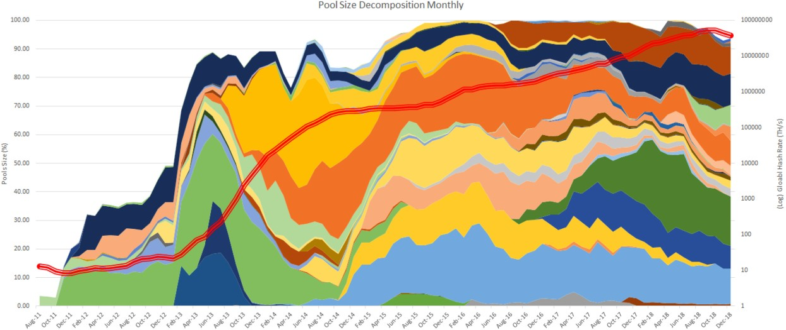
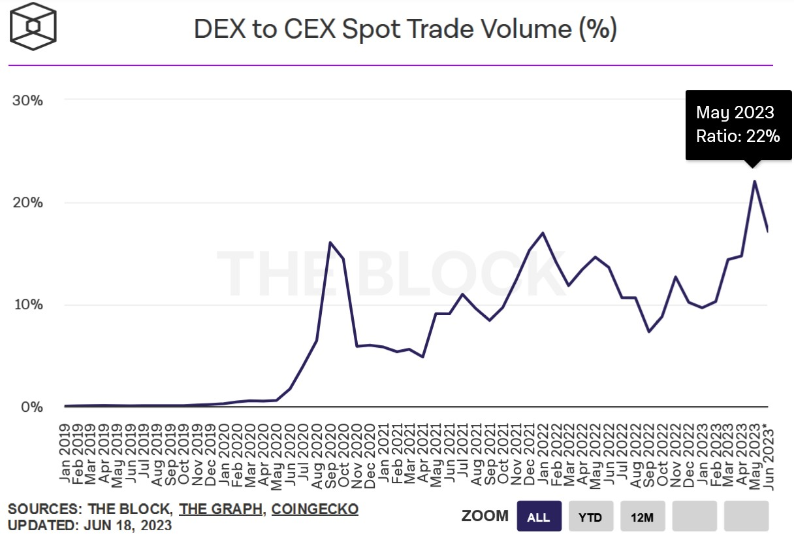
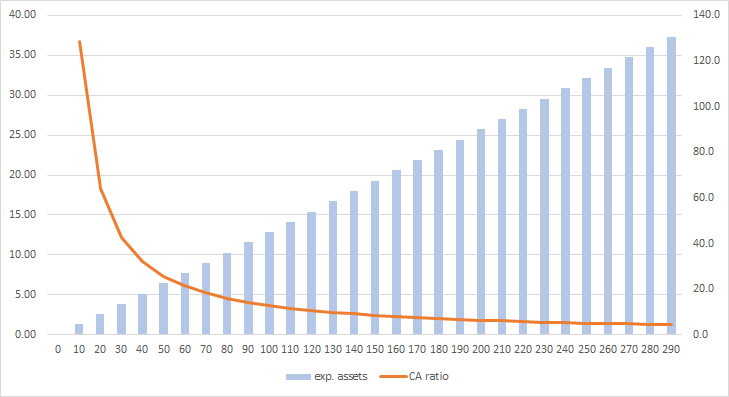
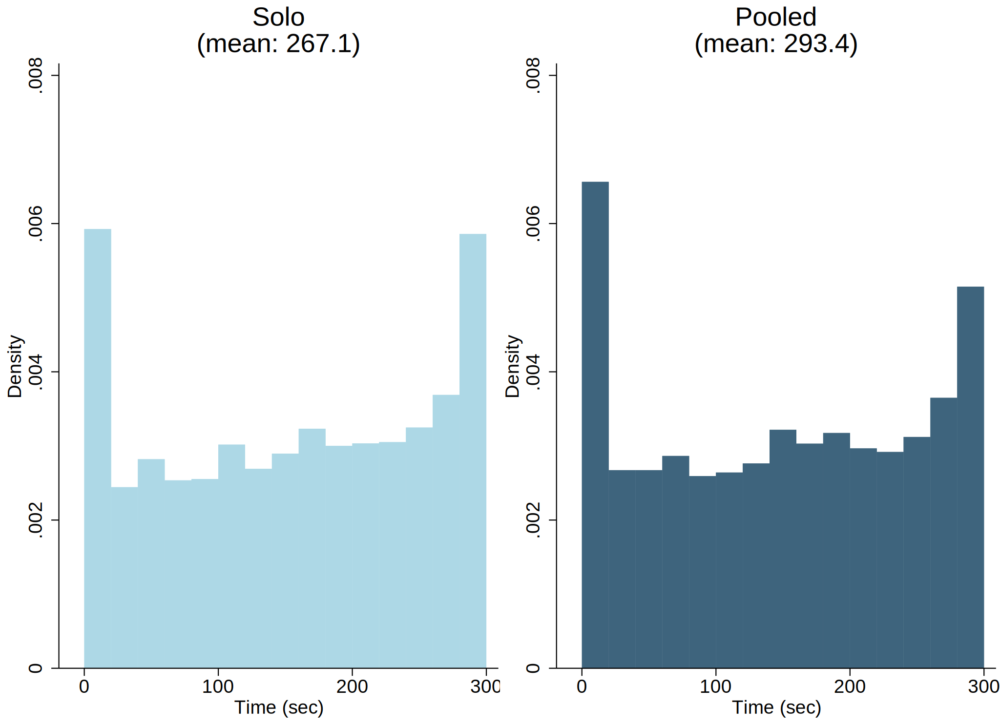
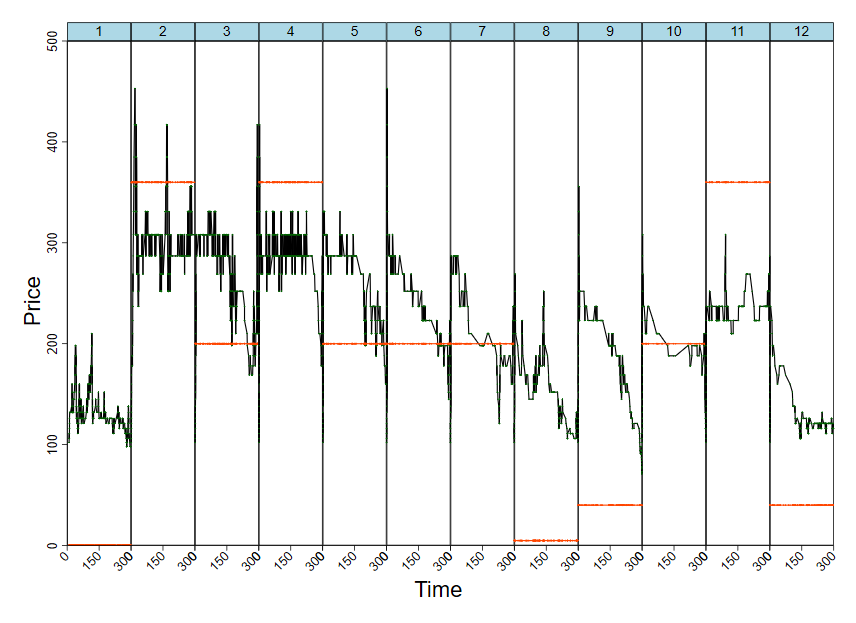
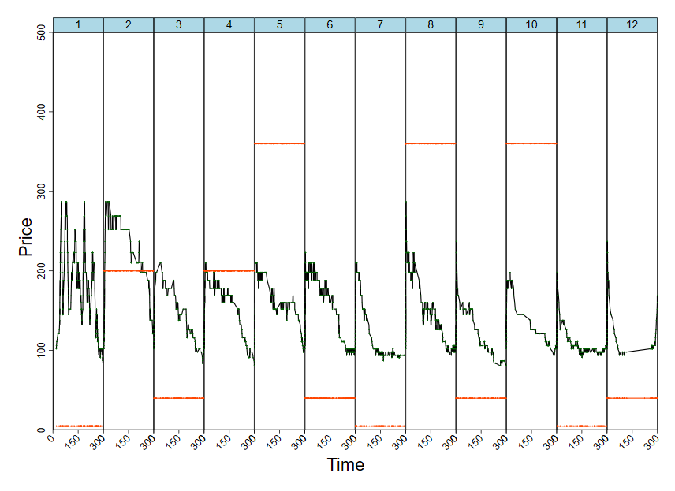
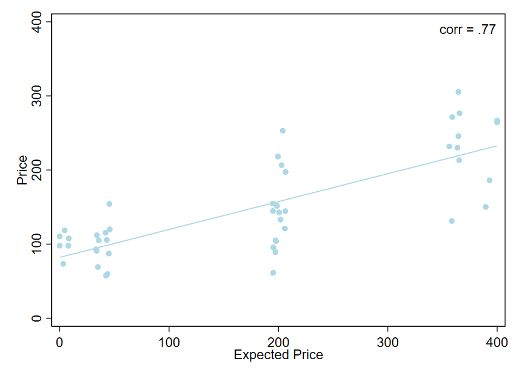
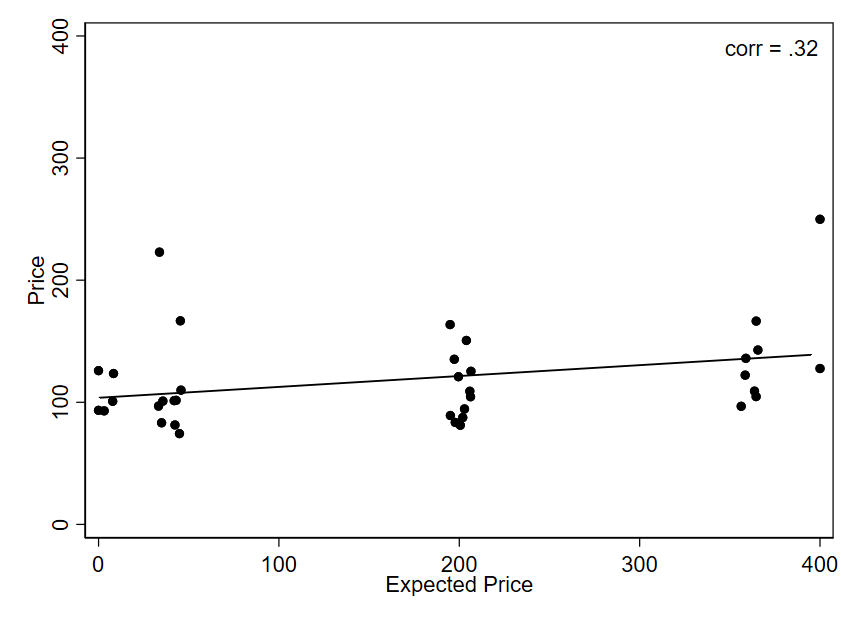
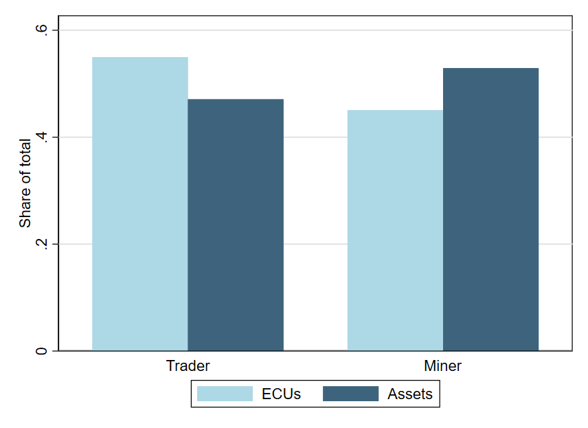
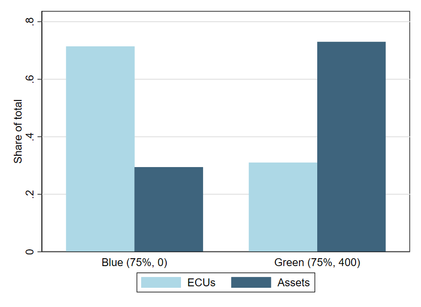

Mining Centralization in Cryptocurrency Markets: A Laboratory Experiment
Alexander Usvitskiy, Christoph Huber, Alexis Belianin, Alexander Didenko
Experimental Finance 2023
21 June 2023
Introduction: Cryptocurrencies and Mining
Bitcoin: a digital currency which works through a decentralized computer network
Popularity of cryptocurrencies and blockchain has surged
\(\rightarrow\) numerous services and exchanges for crypo ‘coins’
Proof-of-Work (PoW) technology as a means of maintaining the integrity and security of decentralized network
- Miners compete: Miners solve complex puzzles using computational power and energy.
- First solver: The first miner to find the solution broadcasts it.
- Verification and rewards: Other nodes verify the solution, and the successful miner is rewarded.
(e.g., Gervais et al., 2016)
Introduction: Cryptocurrencies and Mining
PoW requires a significant amount of computational power and energy
Probability of success is very (!) small
- \(\rightarrow\) Mining is very risky
Mining centralization \(\rightarrow\) formation of mining pools
Introduction: Mining centralization
Mining centralization \(\rightarrow\) formation of mining pools
- miners combine their computational resources to increase their chances of success (minimize risk)
- rewards are shared among members of the mining pool

(Cong et al., 2021)
Introduction: AMM trading
Automated Market Makers (AMMs)
- play a crucial role in cryptocurrency markets
- provide liquidity and enable decentralized trading
Liquidity pools:
- two assets (coins) deposited: e.g., BTC and USDT
- smart contracts automatically execute contracts based on predefined rules
- most common and basic rule: \(x \times y = k\)
- price: ratio of assets in liquidity pool
\(\rightarrow\) no central counterparty
Decentralized Finance:
- rise from 90,000 users at the start of 2020 to 4.28 million by the end of 2021 (Makridis et al., 2023)

Research Questions
Are prices more/less efficient with centralized mining?
Are prices more/less volatile with centralized mining?
Are assets allocated efficiently with an automated market-maker (i.e., decentralized trading)?
The Experiment
Treatments
2 \(\times\) 2 experimental treatment design:
- Mining: solo (M1) or pooled (M3)
- Asset value: private or public
| Mining | |||
|---|---|---|---|
| Solo | Pooled | ||
| Asset value | Private | M1-private | M3-private |
| Public | M1-public | M3-public |
The Experiment: Setup
6 participants each form an experimental asset markets
assets can be traded for ECUs (experimental currency units)
12 independent trading periods of 5 min each
In each period:
3 participants randomly assigned the role of traders
- endowment: 12,000 ECUs, 0 assets
the other 3 participants assigned the role of miners
- endowment: 2,000 ECUs, 0 assets
- possibility for mining
The Experiment: Mining
Mining: generation of new assets implemented as an automatic random process
solo mining:
- 25% probability: miner #1 generates 6 assets
- 25% probability: miner #2 generates 6 assets
- 25% probability: miner #3 generates 6 assets
- 25% probability: none of the three miners generates assets
pooled mining:
- 75% probability: miners #1 – #3 together generate 6 assets
- 25% probability: none of the three miners generates assets
\(\rightarrow\) every 10 seconds, any miner has a 25% chance of getting 6 assets
\(\rightarrow\) every 10 seconds, any miner has a 75% chance of getting 2 assets
The Experiment: Assets and CA-Ratio
The Experiment: Asset Values
Private asset values are randomly determined at the end of each independent period:
- 0 ECU with 50% probability
- 400 ECU otherwise
Two possible participant types (randomly assigned):
Blue (Signal L):
- 75% chance that asset value will be zero; 400 ECU otherwise
Green (Signal H):
- 25% chance that asset value will be zero; 400 ECU otherwise
The Experiment: Trading
Automated Market Maker (AMM)
- autonomous trading mechanism
- all participants (traders and miners) can trade
Prices are automatically determined such that the formular holds:
\(\text{(assets in the pool)} \times \text{(ECU in the pool)} = k\),
with 50 assets and 5,000 ECUs initially in the AMM pool and, hence, with \(k = 250,000\).
- Bid price: \(\textit{bid} = k/(x-1) - y\)
- Ask price: \(\textit{ask} = y - k/(x+1)\)
with \(x\) … current number of assets in the AMM pool;
and \(y\) … current number of ECUs in the AMM pool.
Experimental Procedure
Sessions run at HSE University
Student subjects:
- Avg. age: 24.0 years
- 66.7% male
- 78.8% correct responses in 4-item Cognitive Reflection Test (Toplak et al., 2014)
Duration: ca. 2h
Results
Results
Trading across time
- a lot of trading overall:
- solo: 253.4 trades
- pooled: 263.1 trades
- most trading at beginning and end of a period

Results
Two exemplary sessions:
Solo 
Pooled 
Results
Prices closer to RE predictions with solo mining
Solo (\(\rho = .77\)) 
Pooled (\(\rho = .32\)) 
Results
Price Volatility
| (1) full |
(2) mid |
(3) mid |
|
|---|---|---|---|
| Pooled | 1664.0 | -78.62 | 12.46 |
| (1930.1) | (288.4) | (241.2) | |
| # Signal H | -65.55 | 92.92 | 19.38 |
| (424.2) | (74.57) | (47.58) | |
| Period | -448.9 | -127.1* | |
| (338.0) | (62.02) | ||
| Constant | 5023.8 | 1487.8* | 402.2 |
| (3470.5) | (661.3) | (214.2) | |
| Observations | 84 | 84 | 42 |
Standard errors in parentheses: * p < 0.10, ** p < 0.05, *** p < 0.01
Results
Trading behavior – differences between miners/non-miners

At the end of a period:
- Miners hold more assets
- Non-Miners hold more ECUs
\(\rightarrow\) holds for both solo and pooled
Results
Trading behavior – differences between types
At the end of a period:
- expected (private) asset value \(\uparrow\)
- \(\rightarrow\) asset holdings \(\uparrow\)

Results
Earnings
| (1) | (2) | (3) | |
|---|---|---|---|
| Miner | -1075.8** | -964.8* | -965.5* |
| (518.6) | (537.3) | (536.0) | |
| Signal H | 4780.0*** | 4775.6*** | |
| (625.4) | (622.3) | ||
| Pooled | -237.5 | ||
| (566.3) | |||
| Constant | 11559*** | 9285.6*** | 9390.0*** |
| (379.0) | (311.6) | (309.6) | |
| Observations | 498 | 498 | 498 |
Standard errors in parentheses: * p < 0.10, ** p < 0.05, *** p < 0.01
Results
Asset balance at the end of a period
| (1) | (2) | |
|---|---|---|
| Miner | 5.113* | 5.164** |
| (2.274) | (1.968) | |
| Signal H | 25.55*** | 24.14*** |
| (3.395) | (3.475) | |
| Pooled | 1.092 | 5.648 |
| (1.693) | (4.583) | |
| Controls | No | Yes |
| Constant | 9.131*** | 0.0230 |
| (1.936) | (11.76) | |
| Observations | 498 | 498 |
| R2 | 0.302 | 0.411 |
Standard errors in parentheses
* p < 0.10, ** p < 0.05, *** p < 0.01
Conclusion
Conclusion
We implemented mining centralization and trading decentralization in a laboratory asset market experiment.
Conclusion
We implemented mining centralization and trading decentralization in a laboratory asset market experiment.
- mining centralization leads to less efficient prices
Conclusion
We implemented mining centralization and trading decentralization in a laboratory asset market experiment.
mining centralization leads to less efficient prices
mining centralization does not affect volatility
Conclusion
We implemented mining centralization and trading decentralization in a laboratory asset market experiment.
mining centralization leads to less efficient prices
mining centralization does not affect volatility
decentralized trading still produces high volumes of trading
Conclusion
We implemented mining centralization and trading decentralization in a laboratory asset market experiment.
mining centralization leads to less efficient prices
mining centralization does not affect volatility
decentralized trading still produces high volumes of trading
traders with high value buy, traders with low value sell
– regardless of mining centralization
Conclusion
We implemented mining centralization and trading decentralization in a laboratory asset market experiment.
mining centralization leads to less efficient prices
mining centralization does not affect volatility
decentralized trading still produces high volumes of trading
traders with high value buy, traders with low value sell
– regardless of mining centralization
What’s next? private signals, endogenous mining pools, …
Thanks
christoph.huber@wu.ac.at
chr-huber.com
Christoph Huber (WU Vienna)